|
Wentao Jiang 姜文韬
I am currently a senior algorithm engineer at Alimama, Alibaba Group. I obtained my PhD degree (2019-2024) from the School of Computer Science and Engineering, Beihang
University (BUAA), supervised by Prof. Si Liu. I used to visit SoC, NUS, supervised by Prof. Gim Hee Lee. Before my PhD study, I was a master student at Beihang University (BUAA). I received my B.Eng. degree from Harbin Engineering University (HEU) in 2019.
Email /
Google Scholar /
Github /
CV
|
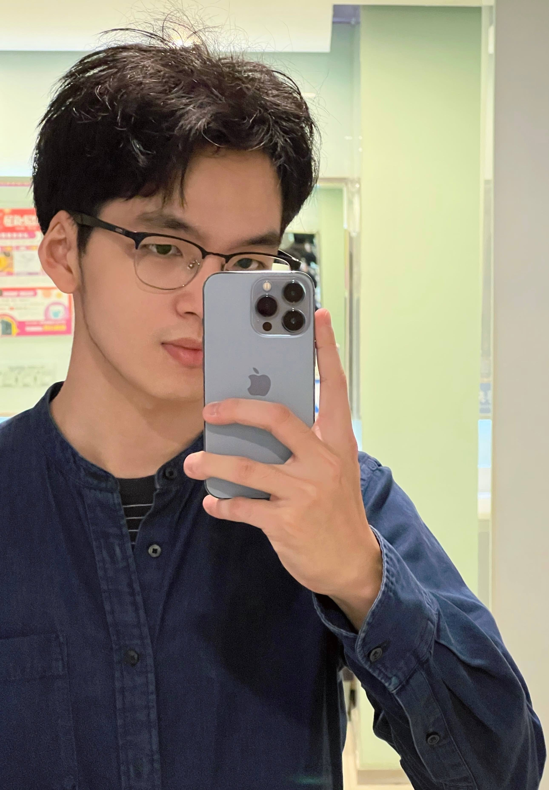
|
|
News
(2024/07) I join Alibaba Group and work on AIGC area!
(2024/06) I receive my PhD degree from Beihang University with my doctoral dissertation "Controlled Image Synthesis and its Application"!
(2022/12) I am going to visit the Department of Computer Science at National University of Singapore (NUS)!
(2022/08) 1 paper with Prof. Si Liu and Dr. Sheng Jin is accepted
by ECCV 2022!
(2021/07) 1 paper with Prof. Si Liu and Dr. Ning Xu is accepted
by ICCV 2021!
(2021/05) 1 paper with Prof. Si Liu is accepted
by TPAMI 2021!
(2020/06) 1 paper with Prof. Si Liu is accepted
by CVPR 2020 as Oral Presentation!
|
|
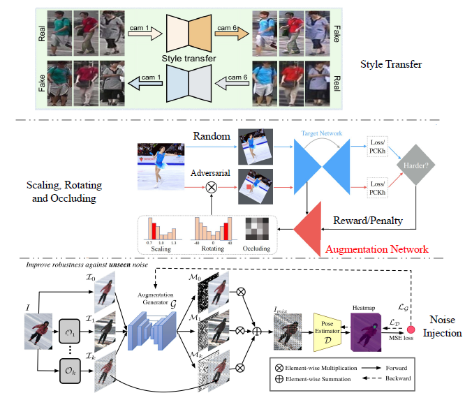
|
Data Augmentation in Human-Centric Vision
Wentao Jiang, Yige Zhang, Shaozhong Zheng, Si Liu, Shuicheng Yan
Vicinagearth (Springer Nature), 2024
|
|
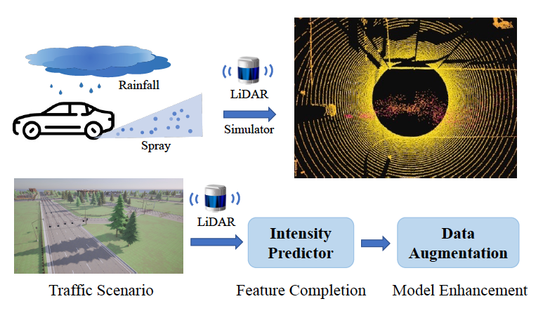
|
Realistic Rainy Weather Simulation for LiDARs in CARLA Simulator
Donglin Yang, Xinyu Cai, Zhenfeng Liu, Wentao Jiang, Bo Zhang, Guohang Yan, Xing Gao, Si Liu, Botian Shi
International Conference on Intelligent Robots and Systems (IROS), 2024
|
|
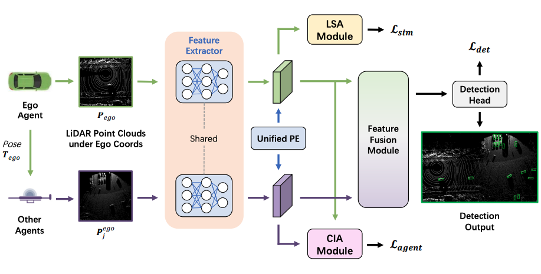
|
DUSA: Decoupled Unsupervised Sim2Real Adaptation for Vehicle-to-Everything Collaborative Perception
Xianghao Kong, Wentao Jiang, Jinrang Jia, Yifeng Shi, Runsheng Xu,
Si Liu
ACM International Conference on Multimedia (ACM MM), 2023
|
|
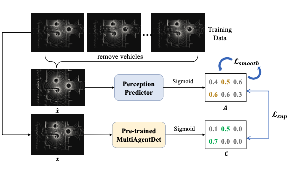
|
Optimizing the Placement of Roadside LiDARs for Autonomous Driving
Wentao Jiang,
Hao Xiang, Xinyu Cai, Runsheng Xu, Jiaqi Ma, Yikang Li, Gim Hee Lee, Si Liu
IEEE International Conference on Computer Vision (ICCV), 2023
|
|
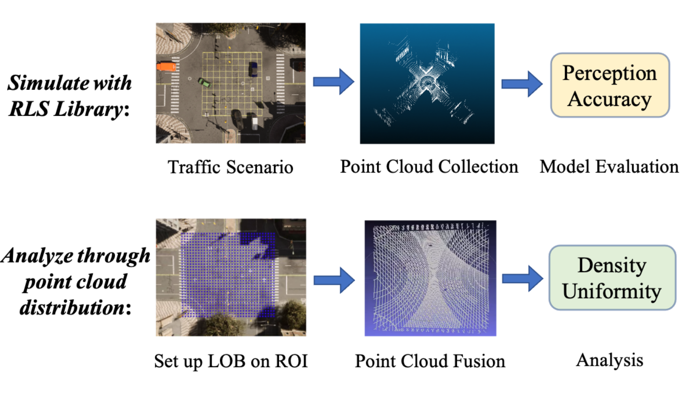
|
Analyzing Infrastructure LiDAR Placement with Realistic LiDAR Simulation Library
Xinyu Cai*,
Wentao Jiang*,
Runsheng Xu,
Wenquan Zhao,
Jiaqi Ma,
Si Liu,
Yikang Li
IEEE International Conference on Robotics and Automation (ICRA), 2023
[Paper]
[Code & Lib]
|
|
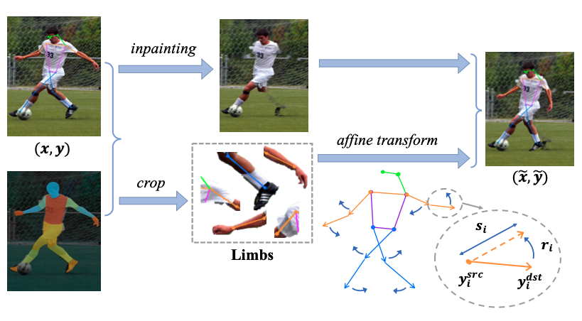
|
PoseTrans: A Simple Yet Effective Pose Transformation Augmentation for Human Pose Estimation
Wentao Jiang,
Sheng Jin,
Wentao Liu,
Chen Qian,
Ping Luo,
Si Liu
European Conference on Computer Vision (ECCV), 2022
[Paper]
[Code]
|
|
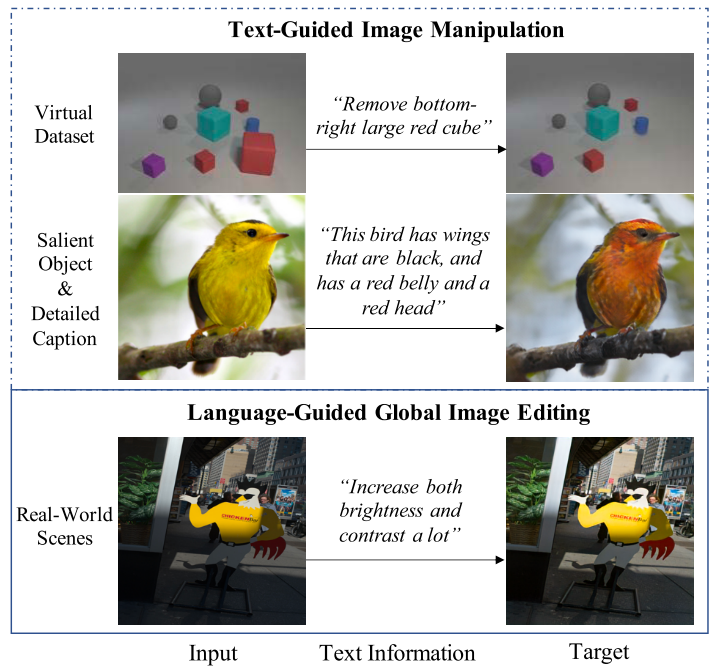
|
Language-Guided Global Image Editing via Cross-Modal Cyclic Mechanism
Wentao Jiang,
Ning Xu,
Jiayun Wang,
Chen Gao,
Jing Shi,
Zhe Lin,
Si Liu
IEEE International Conference on Computer Vision (ICCV), 2021
[Paper]
|
|
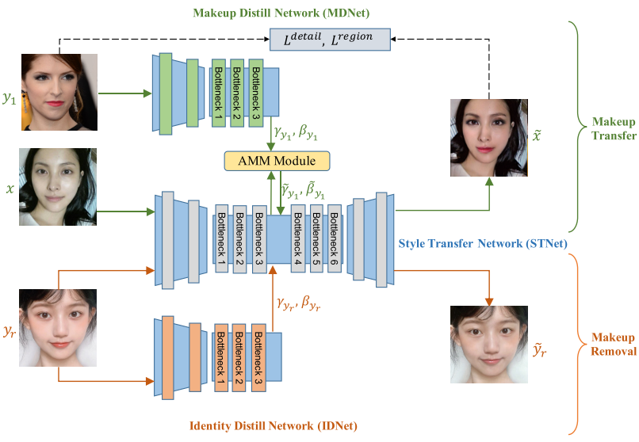
|
PSGAN++: Robust Detail-Preserving Makeup Transfer and Removal
Si Liu,
Wentao Jiang,
Chen Gao,
Ran He,
Jiashi Feng,
Bo Li,
Shuicheng Yan
IEEE Transactions on Pattern Analysis and Machine Intelligence (TPAMI), 2021
[Paper]
|
|
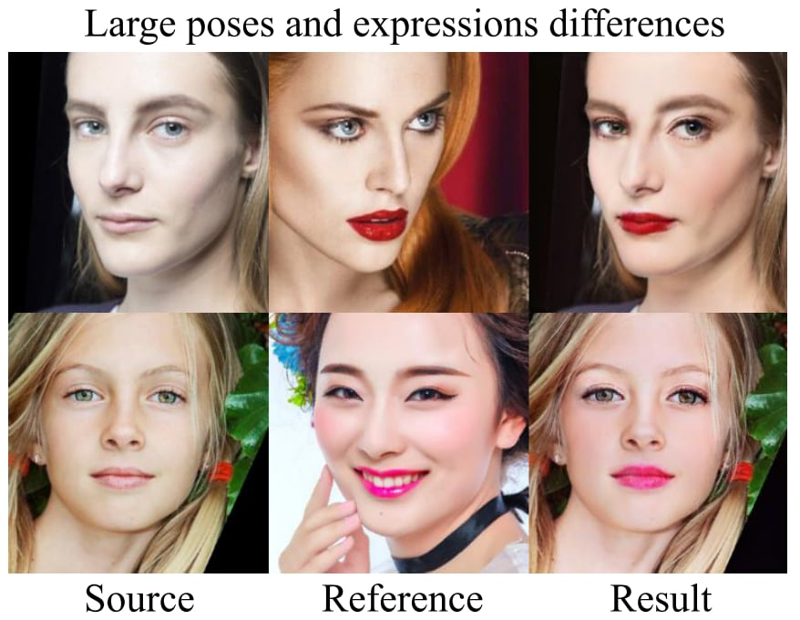
|
PSGAN: Pose and Expression Robust Spatial-Aware GAN for Customizable Makeup Transfer
Wentao Jiang,
Si Liu,
Chen Gao,
Jie Cao,
Ran He,
Jiashi Feng,
Shuicheng Yan
IEEE Conference on Computer Vision and Pattern Recognition (CVPR), 2020
(Oral Presentation, 5% acceptance rate)
[Paper], [Code & Dataset]
|
|
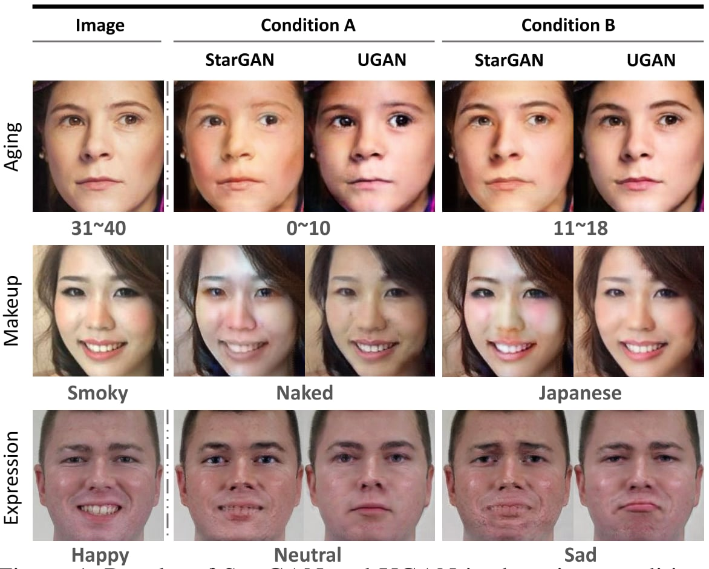
|
UGAN: Untraceable GAN for Multi-Domain Face Translation
Defa Zhu,
Si Liu,
Wentao Jiang,
Chen Gao,
Tianyi Wu,
Qaingchang Wang,
Guodong Guo
arXiv preprint arXiv:1907.11418, 2019
[Paper]
|
Honors
National Scholarship (Top 1%), 2021
Outstanding Freshman Scholarship for PhD Student (Top 5%), Beihang University, 2020
First Class Scholarship, Beihang University (Top 10%), 2019
Outstanding Freshman Scholarship for Master Student (Top 5%), Beihang University, 2019
Outstanding Graduates, Harbin Engineering University (Top 2%),
2019
National Scholarship (Top 1%), 2017
Silver Medal, ACM-ICPC Asia Regional Contest, 2017
Silver Medal × 3, China Collegiate Programming Contest (CCPC) Regional Contest,
2016-2017
|
|